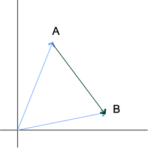
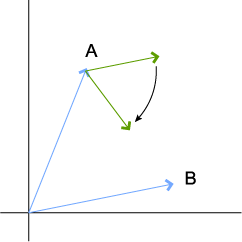
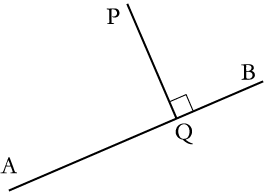

UnrealScript Vector Maths
This is a page of "how to I do foo" sort of things, for values of "foo" involving points, vectors, rotators, quaternions, etc. Add question, post pseudocode / UnrealScript code.
And as we sometimes say... "it's not rocket science!". Except in this case, it is  .
.
In the following:
- A and B are points in space. These could be Actors.
- a and b are vectors for the positions of these points respectively (e.g.
A.Location)
Some basic work with locations
In these diagrams, vectors that represent:
- positions are shown in blue
- orientations are shown in green
The vector you're after is usually in black.
A vector that points from A to B
vector = b - a;

|
The simple way to visualize this is to imagine you want to travel from point A to point B, using the vectors you already have. You travel along a backwards, so -a and then along b. This gives -a + b, which is equal to b - a.
A unit vector pointing from A to B
Take the expression from above and normalize it:
vector = Normal(b - a);
The distance between A and B
Simply find the length of the vector:
distance = VSize(a - b); distance = VSize(b - a);
The order doesn't matter here, since the length of a vector is always positive.
Devi:
Note that the VSize function is relatively slow since it involves a square root (it uses pythagoras theorem: L^2 = X^2 + Y^2 + Z^2). If you just want to compare the distance between two points to another length (i.e. you want to say "Is the distance between A and B less than 100 units?") then you can speed up the operation by using VSizeSq, which returns the squared length of a vector (it does the same as VSize but leaves out the final square root operation) and by squaring the distance you're comparing to as well. So "Is the length less than 100?" becomes "Is the squared length less than 100 squared?" for example:
function DistanceLessThanOneHundred(vector a, vector b) { if (VSizeSq(a-b) < 10000) { return true; } else { return false; } }
or even
function bool IsDistanceLessThan(vector a, vector b, float distance) { return (VSizeSq(a-b) < distance**2 ) }
Wormbo: This just calls for a little optimization warning. Your "VSizeSq" function does not exist in UT2004 and would have to be written in UnrealScript, like this:
static final function float VSizeSq(vector A) { return Square(A.X) + Square(A.Y) + Square(A.Z); }
The problem with this is: it's an UnrealScript function. That means, it's already slower than the corresponding native implementation. When using this function, there's one UnrealScript function call (the function itself) as well as 5 native function calls (three times the Square function and twice the operator +). I dare to say that this eats up the benefits of not performing the square root operation on the result.
Devi: I'm working with the Unreal 2.X engine, maybe VSizeSq only exists in that version, apologies for any confusion...
Anyhows, if you want to make your own version of VSizeSQ then the fastest way to do it in UScript is to do the following:
function float VSizeSq(Vector a) { return a dot a; }
Which is only one native operator call, hurrah  As you say with functions being slow to call, you may want to just directly insert "myVector dot myVector" into your code rather than putting it into a seperate function...
As you say with functions being slow to call, you may want to just directly insert "myVector dot myVector" into your code rather than putting it into a seperate function...
(Wormbo, hope you don't mind but I corrected your code sample and comments so that your version of VSizeSq worked with only one vector as it should, rather than working with two)
Wormbo: Oh right, thanks.  BTW: I've just tested the execution speed of x dot x versus VSize(x):
BTW: I've just tested the execution speed of x dot x versus VSize(x):
function int Main(string Args) { local vector v; local float f; local int i, j; for (j = 0; j < 3; j++) { log("Test " $ j); i = int(Args); StopWatch(false); while (i-- > 0) { v = 1000 * VRand(); f = VSize(v); } StopWatch(true); i = int(Args); StopWatch(false); while (i-- > 0) { v = 1000 * VRand(); f = v Dot v; } StopWatch(true); } return 0; }
Output:
D:\UT2004\System>ucc test.test 100000 Executing Class test.TestCommandlet Test 0 Time=55.081175 ms Time=61.303065 ms Test 1 Time=54.837094 ms Time=60.095937 ms Test 2 Time=54.314674 ms Time=60.696120 ms D:\UT2004\System>ucc test.test 10000 Executing Class test.TestCommandlet Test 0 Time=5.410266 ms Time=5.997695 ms Test 1 Time=5.466540 ms Time=7.278457 ms Test 2 Time=5.332435 ms Time=6.241699 ms D:\UT2004\System>ucc test.test 1000 Executing Class test.TestCommandlet Test 0 Time=0.573987 ms Time=0.569542 ms Test 1 Time=0.529024 ms Time=0.590087 ms Test 2 Time=0.557979 ms Time=0.596532 ms D:\UT2004\System>ucc test.test 100 Executing Class test.TestCommandlet Test 0 Time=0.068894 ms Time=0.062653 ms Test 1 Time=0.051611 ms Time=0.060420 ms Test 2 Time=0.053945 ms Time=0.061406 ms D:\UT2004\System>ucc test.test 10 Executing Class test.TestCommandlet Test 0 Time=0.020546 ms Time=0.006913 ms Test 1 Time=0.014280 ms Time=0.006459 ms Test 2 Time=0.005833 ms Time=0.005924 ms D:\UT2004\System>ucc test.test 1 Executing Class test.TestCommandlet Test 0 Time=0.015603 ms Time=0.001598 ms Test 1 Time=0.001807 ms Time=0.001216 ms Test 2 Time=0.001130 ms Time=0.001585 ms D:\UT2004\System> |
Interestingly, loop execution seems to become faster after the first iteration.
Devi: lol, my old boss would be proud of you, he always said you should *always* do timings on things if you're having arguments about optimisations
Anyhows, I've only been using UScript for a week or so (I'm a C++ programmer by training) and I can give no explanation at all for the results you get from that test. The fact that when you did the operation once you found that VSize was about 10 times slower than Dot is what I would have expected, but the fact that the more you do it, the faster VSize gets compared to Dot (even overtaking it in speed) implies something very odd must be happening under the hood of the UC virtual machine...
Switch: The fastest square dist method I found was bit slower than VSize. BTW, some category for pages on profiling would be welcome, putting this in comments adds a lot of noise to the document.
function Profile() { local int a,b; local vector va,vb; va = vect(1234.5678,-9012.3456,7890.1234); vb = vect(-5678.9012,3456.7890,-1234.5678); for(a=0; a<20; ++a) { stopwatch(false); //for(b=0; b<10000; ++b) { //if( ((va-vb)dot(va-vb)) < 1000000 ){} //if( VSize(va-vb) < 1000 ){} //} stopwatch(true); } }
Build: 3355 commandlet Commandline: start /REALTIME /B ucc sandbox.sandbox LOOP 20x1, ((va-vb)dot(va-vb)) < 1000000 Time=0.008693 ms Time=0.001483 ms Time=0.001213 ms ... LOOP 20x1, VSize(va-vb) < 1000 Time=0.008144 ms Time=0.001159 ms Time=0.001023 ms ... LOOP 20x10000, ((va-vb)dot(va-vb)) < 1000000 Time=7.056599 ms Time=6.996057 ms Time=6.992126 ms ... LOOP 20x10000, VSize(va-vb) < 1000 Time=4.834834 ms Time=4.831398 ms Time=4.831604 ms ...
Foxpaw: Loops get faster with a greater number of iterations because of CPU caching and an increased probability of TLB hits. For this reason I always "precache" things when I profile them, IE running the test twice and keeping the second result. (Unless I need "real world numbers" and it's time consuming enough to be measured on a single iteration.) Ideally you could test with a clean cache every time, but manually flushing the cache and TLB can't really be done from within an operating system such as Windows or Linux, (let alone from within UScript) so I run my tests fully cached.
Orientations
A unit vector pointing in the direction a player is looking:
vector = vector(myPlayerController.GetViewRotation());
Rotate Actor A to face point B
a = A.location; b = B.location A.SetRotation(rotator(b - a));

|
Things from below here need clarifying....
...find where B is in relation to A?:
actor A, B; vector aFacing,aToB; // What direction is A facing in? aFacing=Normal(Vector(A.Rotation)); // Get the vector from A to B aToB=B.Location-A.Location; orientation = aFacing dot aToB; // > 0.0 B is in front of A // = 0.0 B is exactly to the right/left of A // < 0.0 B is behind A
The code above functions using the mathematic law that states that if you dot product a normalised vector (which I'll call N) with another vector (which I'll V), the result will be the length of V along direction N. We work out a normal vector that points in the same direction as A is facing, then for V we calculate the vector that leads from A to B. Now, if the result is positive then we know that V must be travelling at least a little in the same direction as N (therefore B is in front of A). If the result is 0 then V isn't travelling along N at all (i.e. it must be at right angles to it). Finally if the result is negative then we know that V must be travelling at least a little in the opposite direction of N (meaning B is behind A).
...find where Actor A is in relation to Pawn B, taking into account B's ViewRotation? (make sure Pawn B has a Controller):
orientation = vector(B.Controller.GetViewRotation()) dot Normal(A.Location - B.Location); // > 0.0 A points forwards in relation to B (up to 90° apart) // = 0.0 A is perpendicular to B (exactly 90° between A and B) // < 0.0 A points backwards in relation to B (more than 90° apart)
Question: How do I know if its to the Left or Right?
Devi: This code works exactly the same way as the code in the previous section. Now, if you think about it, the question: Is it to the left or right? Can be solved in the same way as the question: Is it in front of me or behind me? You just need to use a vector that points left/right instead of one that points forwards:
local vector lateral; // Get facing vector lateral=vector(B.Controller.GetViewRotation()); // Rotate 90 degrees in XZ, I'm going to assume (probably wrongly) that this lateral vector will point to the left of the facing, but it COULD be facing to the right // in which case the answers below are the wrong way round... lateral=lateral cross vect(0,0,1); orientation = lateral dot Normal(A.Location - B.Location); // > 0.0 A sits to the left of B // = 0.0 A is in front of/behind B (exactly 90° between A and B) // < 0.0 A sits to the right of B
...find a point that's at a certain distance from a starting point in a given direction? :
LocationTarget = LocationStart + vector(Rotation) * Distance;
...find the (smallest) angle between A and B?
Note: Acos is a built-in function in UT2003. It is not present in UT, see Useful Maths Functions.
This assumes A and B are normalized (are unit vectors). If either of them is not normalized you need to wrap them in a Normal().
angle_radians = Acos(A dot B); angle_degrees = Acos(A dot B) * 180/pi;
DemonThing: Just wanted to point out that the vector A dot B is defined as
A dot B = VSize(A) * VSize(B) * cos(angle) //or A dot B = vect(A.x * B.x, A.y * B.y, A.z * B.z)
if I remember correctly. Don't try this code out – it won't work!!!
Devi: Umm, the result of A dot B is a float, not a vector. It's defined as:
A dot B = (A.x*B.x) + (A.y*B.y) + (A.z*B.z)
See  Dot product.
Dot product.
...point to my left or right? :
A vector that points at 90 degrees to the way you're looking can be given by the following. Note that it is horizontal; in the XY plane. (So for a rolling aeroplane, this won't point along the wing which will be slanted)
resultingVector = Normal(vector cross vect(0, 0, 1));
...find out vector B that points x degrees to the left or right of vector A?
Foxpaw: I believe there are multiple vectors that could satisfy this. Can you be more specific?
Tarquin: It depends on what you want – 'left' and 'right' doesn't mean much in 3D, it has to be on a plane. We can assume the horizontal though, as above.
smattbac: Like in the example above this one, but instead of 90 degrees, any angle (or less than 90).
Tarquin: Get a normal of the direction you're pointing in. Call it i. Get the 90 degrees to the left one. Call it j. Do some sine and cosine mojo with them.
Foxpaw: I think it would be something along the lines of:
Normal((Normal(vector) * (1 - (AngleInDegrees / 90) ) ) + (Normal(vector cross vect(0, 0, 1)) * (AngleInDegrees / 90)));
I'm not sure if that would work or not. It seems to work for 0 degrees, 90 degrees, and 45 degrees, but I don't know if it will work for other ones or not.
Tarquin: eek. What you need is this: i*cos(alpha) + j*sin(alpha). Alpha is angle in radians, obviously
Rotate a rotator by another rotator
Dirk Fist: Ok, I have a demo (UT) map that shows arbitrary rotation in object coordinates, Its 10k
function rotator rTurn(rotator rHeading,rotator rTurnAngle) { // Generate a turn in object coordinates // this should handle any gymbal lock issues local vector vForward,vRight,vUpward; local vector vForward2,vRight2,vUpward2; local rotator T; local vector V; GetAxes(rotation,vForward,vRight,vUpward); // rotate in plane that contains vForward&vRight T.Yaw=rTurnAngle.Yaw; V=vector(T); vForward2=V.X*vForward + V.Y*vRight; vRight2=V.X*vRight - V.Y*vForward; vUpward2=vUpward; // rotate in plane that contains vForward&vUpward T.Yaw=rTurnAngle.Pitch; V=vector(T); vForward=V.X*vForward2 + V.Y*vUpward2; vRight=vRight2; vUpward=V.X*vUpward2 - V.Y*vForward2; // rotate in plane that contains vUpward&vRight T.Yaw=rTurnAngle.Roll; V=vector(T); vForward2=vForward; vRight2=V.X*vRight + V.Y*vUpward; vUpward2=V.X*vUpward - V.Y*vRight; T=OrthoRotation(vForward2,vRight2,vUpward2); return(T); }
...damp a velocity vector toward a surface?
Velocity += SurfaceNormal * (Normal(Velocity) dot SurfaceNormal) * DampFactor;
Useful DampFactor is >=-1, where -1 will make Velocity parallel to the surface, 0 will do nothing, and positive values will give a "pop up" effect by making the Velocity vector point further from the plane of the surface.
...find point Q where a normal from point P to a line from A to B meets the line?
Given a line AB and a point P, we want to find a point Q on that line such that PQ and AB are perpendicular.

Q = A + Normal( B - A ) * ((( B - A ) dot ( P - A )) / VSize( A - B ));
This is perfect for that railgun with shockwave damage you always wanted:
for (P = Level.PawnList; P != None; P = P.NextPawn) { Q = StartTrace + Normal( HitLocation - StartTrace ) * ((( HitLocation - StartTrace ) dot ( P.Location - StartTrace )) / VSize( StartTrace - HitLocation )); if (VSize( P.Location - Q ) < ShockwaveRadius) { // Pawn is within ShockwaveRadius, do your mojo! } }
Note: Point Q is not restricted to the length of line AB, so remember to check that the victims are in front of StartTrace and behind HitLocation for that railgun (unless you want it to go through the whole level in either direction, ofcourse...)
DemonThing: Q is relative to the origin, assuming A, B, and P are as well. Observe:
See my definition of dot product above (the first one). You will see that (B - A) dot (P - A) is equal to VSize(B - A) * VSize(P - A) * cos(angle). Divide that by VSize(A - B) (which is equal to VSize(B - A)) and you get VSize(P - A) * cos(angle). If you know a bit of trigonometry, you will see that this is equal to VSize(Q - A). When you multiply that by Normal(B - A) (which is equal to Normal(Q - A), since A, B, and Q are collinear), you get Q - A. We add A to that and we get Q, which is a location vector.
...only affect certain components of a vector?
In UnrealScript there's a component-by-component vector multiplication. You can use it to either only use two components of a vector for an operation and/or ignore certain components of the result.
// do something with A but don't change the Z component of it vector = vect(1,1,0) * DoSomethingWith(A) + vect(0,0,1) * A; // do something with the X and Z components of A vector = DoSomethingWith(vect(1,0,1) * A); // do something with the Y and Z components of a vector and use its original X component vector = vect(0,1,1) * DoSomethingWith(vect(0,1,1) * A) + vect(1,0,0) * A;
What does this do?
resultingVector = Normal(vector cross vect(0, 0, 1));
The cross product of two vectors is perpendicular to both. Which means that (vector cross vect(0, 0, 1)) is a vector pependicular to the given vector AND the z-axis. Something perp to z is horizontal – it's confined to the XY plane. So it's a horizontal vector that is also perp to the given vector. It's then normalized. I can't remember which way the cross product points in Unreal. So it's either a unit vector that points to your right or left.
Devi As an aside, if you want to rotate a 3D vector by 90 degrees on the XZ plane you can also do this:
local float t; local vector v; t=v.x; v.x=v.y; v.y=-t;
The output vector is identical in length to the ingoing one (i.e. If it was normal when it went in, it'll be normal when it came out) In C this would be far faster that the example beforehand, though whether it's faster in UScript is another matter...
AlphaOne: What about this:
vector = vect(0, 0, 1) >> Rotation;
I believe that Rotation is also a vector (not a rotator). Is it?
Tarquin: Be pretty cruddy coding if it were. >> is a rotator / vector operator.
Dade: How would i go about modifying only the "XY" coordinates of a vector? I.E. Changes the vector's
location, but not its height. Or is this even possible? (haven't studied vectors yet)
VonStrohmen: I'm not quite sure what you're asking, but if you mean can you change the X and Y components of a vector without modifying its Z, then sure.
Vector A,B; B = vect(A.X +50, A.Y + 100, A.Z);
Dade: Ah Ha! Thank you. That was exactly what i needed.
Wormbo: Note that vect(x,y,z) and rot(p,y,r) are more like "a string" or 'aName', in other words a constant. Also note that you can "multiply" vectors in UnrealScript, i.e. vect(1,2,3) * vect(2,3,4) = vect(2,6,12). This is neither dot product nor cross product, it just multiplies the corresponding parts of the vector.
Mortal Monkey: Hello good people! I just added the "...find vector Q" part, feel free to improve it.
Foxpaw: What do << and >> do with regards to vectors? One of them appears to do a coordinate rotation of the vector given that the rotator points along the X Axis of the target coordinate system, but what does the other one do?
inio: I thought they rotated a vector by a rotator, and the reverse a of a rotator ((theVec << theRot) >> theRot == theVec)
Foxpaw: That may be. I know that one of them does the coordinate rotation, which is basically what you said. It is possible that the other just does it by the reverse of that rotator.
Sir_Brizz: Is it too much to ask that someone PLEASE put some pictures up showing precisely how these all work? Imaginary directions and all are way too confusing to leave to the brain.
Tarquin: Care to nominate some that need a picture particularly badly?
Sir_Brizz: Well, I think there should at least be one explaining several at a time. I'm trying to figure out exactly how "...find where A is in relation to B?" works exactly.
Devi: I just rewrote that section so it actually (at least to me ) makes sense, by, you know, explaining what A and B actually are Hope that helps... (Sorry, I'm a bit pants at making diagrams)
Devi: heheh, just realised that both mine and the other guys example was finding where B was in relation to A, rather than vice-versa Just renamed the subject title...
Unrealed: Cool, it helped me a lot . It was simple and I didnt know how: SetRotation(rotator(NextEnemy.Location-Location));